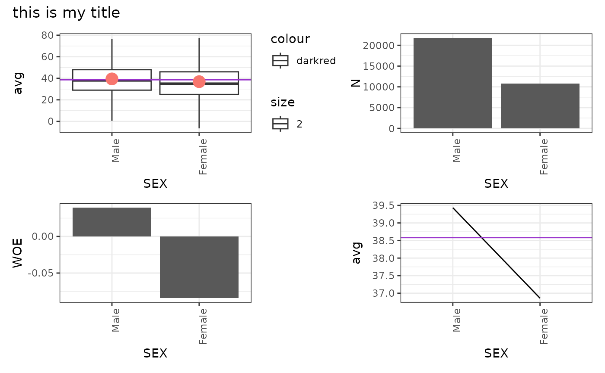
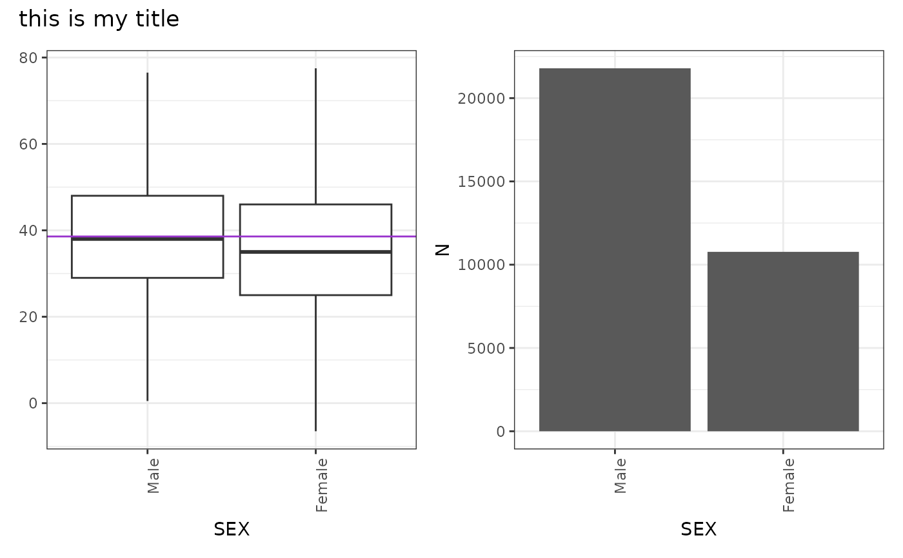
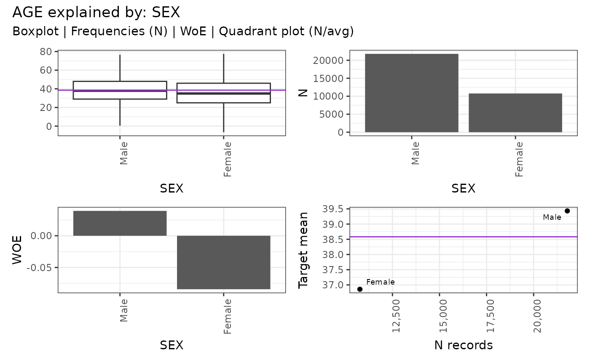

autoplot method for crossvar OR targeter object (with a variable specification). draws the combination of 4 selected plots/
Usage
fullplot(
x,
var = NULL,
numvar_as = c("value", "bin"),
metadata = NULL,
print_NA = TRUE,
only_target_ref_level = TRUE,
lim_y = TRUE,
title = TRUE,
subtitle = TRUE,
which_plot = 1:2
)Arguments
- x
object of class 'crossvar' or 'targeter'
- var
character, used when x is a targeter object to select the variable of interest (crossvar in x$profiles slot)
- numvar_as
character, one of 'value' (default) and 'bin'
- metadata
data.frame - if metadata is loaded in R environment, label of the variables can be used. Default value (NULL) corresponds to no metadata available. The label will be used for the title and the x-axis of the graph.
- print_NA
boolean - By default, the value is TRUE. If FALSE, the missing values of the variable are not printed.
- only_target_ref_level
boolean - By default, the value is FALSE. If TRUE, only print the values for the target TRUE.
- lim_y
boolean - By default, the value is TRUE. The axis y for the proportion is limited between 0 and 100.
- title
boolean: do we plot default generated title Y/N or character (override title) - default: TRUE
- subtitle
boolean: do we plot default generated subtitle Y/N or character (override subtitle)- default: TRUE
- which_plot
integer: which plots must contain the full plot using: binary targets: 1 for counts, 2 for percentages, 3 for WOE and 4 for quadrant. For numeric targets: 1 for boxplots, 2 for counts, 3 for WoE and 4 for quadrant plot. Default: 1:2
Examples
C <- crossvar(adult, target = "ABOVE50K", var = "AGE")
#>
#> INFO:target ABOVE50K detected as type: binary
#> INFO:binary target contains number, automatic chosen level: 1; override using `target_reference_level`
fullplot(C)

CN <- crossvar(adult, target = "AGE", var = "SEX")
#>
#> INFO:target AGE detected as type: numeric
fullplot(CN, title = "this is my title", subtitle = FALSE)

fullplot(CN, which_plot = 1:4)
